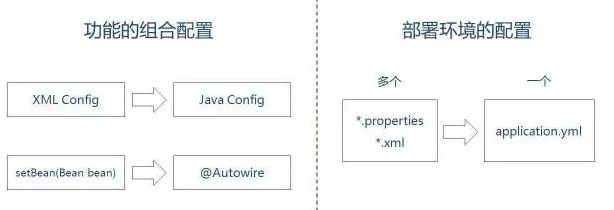

后台技术架构文档
后台技术架构文档-精洲华娱
文档归公司内部使用
开发模式- 小步快走，快速迭代
使用
敏捷开发模式开发,敏捷方法是试图通过小型的. 自我管理的团队用短小的合作发布周期来鼓励迭代式软件开发方法.软件的质量贯穿敏捷软件开发每一个阶段.且非常重要,来保证能在每一个迭代周期内及早是的发现并及时相应消灭开发过程中出现错误.

传统方法瀑布开发模型
瀑布模型[Waterfall Model]最早强调系统开发应有完整生命周期，且必须完整的经历周期中每一开发阶段，并系统化的考量分析与设计的技术、时间与资源之投入等，因此瀑布模型又可以称为‘系统发展生命周期’[System Development Life Cycle, SDLC]。由于该模式强调系统开发过程需有完整的规划、分析、设计、测试及文件等管理与控制，因此能有效的确保系统品质

数据库产品
软件优化
- 正确使用MyISAM和InnoDB存储引擎,尽可能使用InnoDB
- 正确使用索引
- 避免使用 select *
- 字段尽可能的设置 非NULL
硬件优化
- 增加物理内存
- 增加应用缓存
- 使用SSD硬盘
架构优化
- 读写分离

服务器系统
- CentOS(阿里ECS4台)
- Nginx前置机(负载均衡单机)
- SLB负载均衡集群
- 发布脚本
- 分布式部署

消息队列
消息队列中间件是分布式系统中重要的组件，主要解决应用耦合、异步消息、流量削锋等问题。实现高性能、高可用、可伸缩和最终一致性架构。是大型分布式系统不可缺少的中间件。
异步处理
场景说明：用户注册后，需要发送注册邮件和发送注册信息，传统的做法有两种：串行方式、并行方式
串行方式
将注册信息写入数据库成功后，发送注册邮件，然后发送注册短信，而所有任务执行完成后，返回信息给客户端

并行方式
将注册信息写入数据库成功后，同时进行发送注册邮件和发送注册短信的操作。而所有任务执行完成后，返回信息给客户端。同串行方式相比，并行方式可以提高执行效率，减少执行时间。

消息队列
引入消息队列，将不是必须的业务逻辑，异步进行处理，由此改造出来的流程为

传统方式具有如下缺点：
- 假设库存系统访问失败，则订单减少库存失败，导致订单创建失败
- 订单系统同库存系统过度耦合
使用消息队列:
- 订单系统：用户下单后，订单系统进行数据持久化处理，然后将消息写入消息队列，返回订单创建成功
- 库存系统：使用拉/推的方式，获取下单信息，库存系统根据订单信息进行库存操作。

日志处理
日志处理是指将消息队列用在日志处理中，使用
ELK(Elasticsearch+Logstash+Kibana)可用于解决：
- 分布式日志数据集中式查询和管理
- 系统监控，包含系统硬件和应用各个组件的监控
- 故障排查
- 安全信息和事件管理
- 报表功能

日志收集系统工作方式

用户验证方案
App操作中经常涉及用户登录操作，登录就需要使用到用户名和密码，为了安全起见，在登录过程中暴漏密码的次数越少越好。
使用HTTPS协议
HTTPS协议是 HTTP协议 和 SSL／TLS协议 的组合。其是一个安全通信通道，基于HTTP开发，用于在客户计算机和App后台之间交换信息。其使用安全套接字层（SSL）进行信息交换，简单来说就是HTTP的安全版。
JSON作为数据交换格式
JSON是一种轻量级的数据交换格式，采用完全独立于语言的文本格式，易于编写，也易于机器解析和生成，而且对比XML更省流量，这些特性使得JSON成为理想的数据交换语言。
用户验证
传统Web网站使用Cookie+Session保持用户的登录状态，App后台则使用token进行验证

用户动态订阅/推送方案
使用典型的
Feed流系统
概念
Feed：Feed流中的每一条状态或者消息都是Feed，比如朋友圈中的一个状态就是一个Feed，微博中的一条微博就是一个Feed。 Feed流：持续更新并呈现给用户内容的信息流。每个人的朋友圈，微博关注页等等都是一个Feed流。Timeline：Timeline其实是一种Feed流的类型，微博，朋友圈都是Timeline类型的Feed流，但是由于Timeline类型出现最早，使用最广泛，最为人熟知，有时候也用Timeline来表示Feed流。- ``关注页Timeline`：展示其他人Feed消息的页面，比如朋友圈，微博的首页等。
- ``个人页Timeline`：展示自己发送过的Feed消息的页面，比如微信中的相册，微博的个人页等。
特征
多账号内容流：Feed流系统中肯定会存在成千上万的账号，账号之间可以关注，取关，加好友和拉黑等操作。只要满足这一条，那么就可以当做Feed流系统来设计。非稳定的账号关系：由于存在关注，取关等操作，所以系统中的用户之间的关系就会一直在变化，是一种非稳定的状态。 读写比例100:1：读写严重不平衡，读多写少，一般读写比例在10：1，甚至100：1以上。消息必达性要求高：比如发送了一条朋友圈后，结果部分朋友看到了，部分朋友没看到，如果偏偏女朋友没看到，那么可能会产生很严重的感情矛盾，后果很严重。
分类
-
Timeline：按发布的时间顺序排序，先发布的先看到，后发布的排列在最顶端，类似于微信朋友圈，微博等。这也是一种最常见的形式。产品如果选择Timeline类型，那么就是认为Feed流中的Feed不多，但是每个Feed都很重要，都需要用户看到。 -
Rank：按某个非时间的因子排序，一般是按照用户的喜好度排序，用户最喜欢的排在最前面，次喜欢的排在后面。这种一般假定用户可能看到的Feed非常多，而用户花费在这里的时间有限，那么就为用户选择出用户最想看的Top N结果，场景的应用场景有图片分享、新闻推荐类、商品推荐等。
Feed流的主要模式
- 推（Push）

- 拉（Pull）

- 推拉结合（Hybrid）
关于服务端与App之间的消息推送
推送系统
通过接入极光推送实现业务上需要服务端主动推送通知动作在App及做出对应的逻辑流程

服务端开发
Controller层
使用 Spring MVC 作为web请求层
Spring MVC框架是有一个MVC框架，通过实现Model-View-Controller模式来很好地将数据、业务与展现进行分离。从这样一个角度来说，Spring MVC和Struts、Struts2非常类似。Spring MVC的设计是围绕DispatcherServlet展开的，DispatcherServlet负责将请求派发到特定的handler。通过可配置的handler mappings、view resolution、locale以及theme resolution来处理请求并且转到对应的视图。Spring MVC请求处理的整体流程如图

使用 Spring Boot 作为脚手架的方法进行开发
Spring Boot是由Pivotal团队提供的全新框架，其设计目的是用来简化新Spring应用的初始搭建以及开发过程。该框架使用了特定的方式来进行配置，从而使开发人员不再需要定义样板化的配置。通过这种方式，Spring Boot致力于在蓬勃发展的快速应用开发领域（rapid application development）成为领导者。
优点
- 使编码变得简单
spring boot采用java config的方式，对spring进行配置，并且提供了大量的注解，极大地提高了工作效率。
- 使配置变得简单 
- 使部署变得简单
spring boot内置了三种servlet容器：tomcat，jetty，undertow。
- 使监控变得简单
spring boot提供了actuator包，可以使用它来对你的应用进行监控。它主要提供了以下功能：
Dao层
使用MyBatis + Redis + Spring jpa 作为数据访问层
MyBatis 是一款持久层框架，它支持定制化 SQL、存储过程以及高级映射。MyBatis 避免了几乎所有的 JDBC 代码和手动设置参数以及获取结果集。MyBatis 可以使用简单的 XML 或注解来配置和映射原生信息，将接口和 Java 的 POJOs(Plain Old Java Objects,普通的 Java对象)映射成数据库中的记录。
通过本人的开源项目 Mapper 实现了更灵活的,无需重复的代码量的SQL查询与公用方法的封装
Spring Data JPA是Spring基于Hibernate开发的一个JPA框架。如果用过Hibernate或者MyBatis的话，就会知道对象关系映射（ORM）框架有多么方便。但是Spring Data JPA框架功能更进一步，为我们做了 一个数据持久层框架几乎能做的任何事情。下面来逐步介绍它的强大功能。
View层
使用 Freemarker 作用页面的渲染, App与服务端通讯则是用JSON协议通信
使用SpringCloud微服务框架进行项目开发
Spring Cloud是一系列框架的有序集合。它利用Spring Boot的开发便利性巧妙地简化了分布式系统基础设施的开发，如服务发现注册、配置中心、消息总线、负载均衡、断路器、数据监控等，都可以用Spring Boot的开发风格做到一键启动和部署
核心成员
Spring Cloud NetflixNetflix Eureka
服务中心，云端服务发现
Netflix Hystrix
熔断器，容错管理工具
Netflix Zuul
Zuul 是在云平台上提供动态路由,监控,弹性,安全等边缘服务的框架。Zuul 相当于是设备和 Netflix 流应用的 Web 网站后端所有请求的前门
Netflix Archaius
配置管理API，包含一系列配置管理API，提供动态类型化属性、线程安全配置操作、轮询框架、回调机制等功能
Spring Cloud Config
集中化管理集群配置
Spring Cloud Bus
事件、消息总线，用于在集群（例如，配置变化事件）中传播状态变化，可与Spring Cloud Config联合实现热部署。相当于水浒传中日行八百里的神行太保戴宗，确保各个小弟之间消息保持畅通。
Spring Cloud Cluster
Spring Cloud Cluster将取代Spring Integration。提供在分布式系统中的集群所需要的基础功能支持，如：选举、集群的状态一致性、全局锁、tokens等常见状态模式的抽象和实现。
Spring Cloud Consul
Consul 是一个支持多数据中心分布式高可用的服务发现和配置共享的服务软件,由 HashiCorp 公司用 Go 语言开发, 基于 Mozilla Public License 2.0 的协议进行开源. Consul 支持健康检查,并允许 HTTP 和 DNS 协议调用 API 存储键值对. Spring Cloud Consul 封装了Consul操作，consul是一个服务发现与配置工具，与Docker容器可以无缝集成。
Spring Cloud Security
基于spring security的安全工具包，为你的应用程序添加安全控制。这个小弟很牛鼻专门负责整个帮派的安全问题，设置不同的门派访问特定的资源，不能把秘籍葵花宝典泄漏了。
Spring Cloud Sleuth
日志收集工具包
Spring Cloud Stream
创建消息驱动微服务应用的框架, 数据流操作开发包，封装了与Redis,Rabbit、Kafka等发送接收消息。
Spring Cloud Task
主要解决短命微服务的任务管理，任务调度的工作，比如说某些定时任务晚上就跑一次，或者某项数据分析临时就跑几次。
Spring Cloud Starters
Spring Boot式的启动项目，为Spring Cloud提供开箱即用的依赖管理。
Spring Cloud Zipkin分布式链路调用监控系统
和 Spring Boot 是什么关系
spring->spring booot>Spring Cloud
Spring Boot 是 Spring 的一套快速配置脚手架，可以基于Spring Boot 快速开发单个微服务，Spring Cloud是一个基于Spring Boot实现的云应用开发工具；Spring Boot专注于快速、方便集成的单个个体，Spring Cloud是关注全局的服务治理框架；Spring Boot使用了默认大于配置的理念
项目结构
聚哪乐App项目结构

yz-core核心业务层逻辑封装yz-admin后台管理系统yz-ipad商户版接口yz-job任务调度模块,提供一些需要处理超时处理等的任务调度yz-place-admin商户端后台管理yz-restApp接口
Erp项目结构

erpErp接口,事务erp-pushnoticeErp与场所端的socket协议通讯推送gatewaySpringCloud网关层registrySpringCloud注册中心yzconfigSpringCloud分布式配置中心zipkinSpringCloud分布式链路调用监控系统
商户端流程图

商户端流程图点击下载
开发工具
| 功能 | 软件 |
|---|---|
| 代码开发 | eclipse |
| JDK版本 | jdk1.7, jdk1.8 |
| 缓存管理 | Redis客户端 |
| 发布打包 | maven |
| 新增集群实例 | 参考本人开源项目 linux tomcat单机多实例部署shell |
| 发布 | secureCRT, SSH, SHELL脚本 |
| 微信公众号调试 | 微信web开发者工具 |
| 数据库客户端 | Sequel Pro, Dbvisualizer, Navicat |
| 部署容器 | Docker |
使用到的开源
| 功能 | 软件 |
|---|---|
| 项目管理 | BugFree |
| 项目接口文档 | Swagger2, RAP |
| 代码管理软件 | Git |
| 服务器系统 | 阿里云(ECS) |
| 数据库 | (RDS) MYSQL |
| HTTP／HTTPS服务器 | Nginx、Tomcat、Apache |
| 负载均衡 | Nginx、阿里云SLB |
| 消息队列 | RabbitMQ |
| 推送 | JPush |
| 即时聊天 | `融云`` |
| 直播视频 | 网易视频 |
| 搜索 | lucene |
| 图片处理 | OSS图片处理 |
| 监控 | 阿里云druid |
| 缓存 | Redis集群 |
| 短信发送 | 蓝创 |
其他
服务器运行状况
自发布上线以来,生产环境的4台服务器集群均没有出现过宕机情况,有次线上事故为用户加载很慢,分析原因是数据库的连接数过少,被集群服务器的连接池用完了,解决方法:增加RDS的连接数

阿里-服务监控

Docker运行状况
目前使用Docker部署的有
ELK分布式日志,erp系统接口,erp-pushnotice

- 原文作者：星辰
- 原文链接：/post/%E5%90%8E%E5%8F%B0%E6%8A%80%E6%9C%AF%E6%9E%B6%E6%9E%84%E6%96%87%E6%A1%A3/
- 版权声明：本作品采用知识共享署名-非商业性使用-禁止演绎 4.0 国际许可协议. 进行许可，非商业转载请注明出处（作者，原文链接），商业转载请联系作者获得授权。